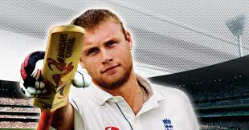

Cricket 2007
Thanks to the groundbreaking EA SPORTS century stick control system ,batting has become more intultive,responsive and rewarding than ever


Games Features
Authentic Content
for the first time in ea sports cricket
title reowned bat manufacturers gray-
nicolls,puma,Slazenger,Kookaboora,and
gun and moorebromg their weight of
authenticity to th day play.Relish the big
game atmosphere with new broadcat
visuals,wicket textures and astute
new commrntary from themasters broadcas
t team of mark Nicolas and richie benaud as
you play out a nail biter against the
faithfully realised backdrop of legendary
international venueor a cherished domestic
ground.
Greater Depth
A new picture-in-picture display with a shot
timing gauge coupled with a running
assistance indicator and rador help you
make those snap decisions out there in the
middle,On-the-fly Dynamic feild
positioningand quickswitch bowling gives
you the ability to ratchet up the pressure on
the batsman by changing the feild and the
bowler's line of attack without a break in
play
Control
Thanks to the groundbreaking EA SPORTS
century stick control system ,batting has
become more intultive,responsive and
rewarding than ever.For the first time in a
cricket game,players can enjoy full control
over foot choice,shot,direction,power and
timing,governed through the use of both
analog sticks.A back or front foot stroke
is selected with the left stick, then shot
timing and direction are judged with the
right stick. Power is determined by how far
the stick is moved-a slight tap can nudge
the ball for a quick single or a firm push can
send the ball fizzing away to the boundary.
Allied to new cameras that deliver a more
natural behind-the-stumps batting
perspective and a wider view of the field,
cricket has never been so easily accessible.
With embellished gameplay, a wealth of
tournaments, genuine equipment and
authoritative new commentary from Mark
Nicholas and Richie Benaud, you won't
experience cricket this authentic without
donning whites and walking down the
pavilion steps yourself.
Groundbreaking control
Use the intuitive dual analog Century Stick
batting system to select foot choice, shot direction,
power and timing. With button controls to loft shots
and advance down the track, you're free to crack a full
array of shots all around the wicket. Success with the
bat also relies upon your batsman's individual skills,
allied with his confidence level. A confident batsman
maximises his potential to time his shots sweetly
maintaining high confidence can make or break his
ability to build a big innings.
New Cameras
Innovative views from behind the batsman offer
a realistic batting perspective, anda reworked
Broadcast camera gives you a wider view of the
play for more authentic COverage.
Quickplay Cricket
Play cricket your way by setting your own pace.
Crank up the game speed, ease back the difficulty
setting and revel in the razzmatazz of Limited Overs
or fully licensed Twenty20 extravaganzas by playing
a fast-blast match of hard-hitting sixes - or slow
the pace down, slide the difficulty up and steel
yourself for a five day Test.
Tournaments Options
Lead this year's eagerly anticipated 3 mobile Ashes
campaign Down Under, replay the legendary 2005 npower
Test Series or unlock a stack of rewards by accomplishing
Ashes challenges. Take part in the frenzy of the fully-loaded,
fully-licensed English and Australian One Day blitz of extreme
Twenty20 cricket., dive into a complete schedule of Australian
State and English County tournaments, tour the world, win
the World Championship or compete for glory in Test matches
and One Day Series games with all the top cricketing nations
of the world.
Related Games